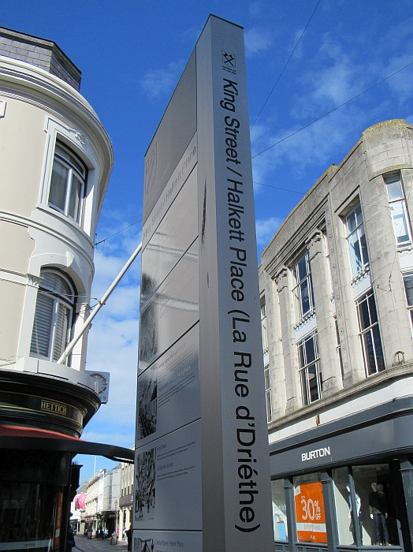
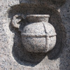
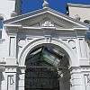
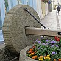
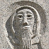

S'lon la Bouonne Nouvelle, Jésû dit qu' “Les dreins s'sont don les preunmièrs, et les preunmièrs - les dreins”. Et nou peut bein vaie à St. Hélyi qu'la Rue dé Driéthe est achteu la preunmié rue conmèrciale d'la Ville.
D'la Plianque Billot jusqu'à la Rue ès Porcs, y'a tout pliein d'boutiques auve lus marchandises. D'pis qu'la rue a 'té pavée duthant l's années septante, ch'est ichîn qu'les acateurs et les touristes veinnent lus traûler en viédgant lus pouchettes et lus bourses et en moulinnant lus pliastique. S'lon l'vièr diton: les sou sont ronds pouor rouôler, happe-les tchi peut!
Mais temps pâssé, ch'tait la Grand' Rue tchi 'tait la preunmiéthe, et lé p'tit c'mîn driéthe les bâtisses né fachait qu'des près et des russieaux. Assa, la reue dé mal forteune a touônné et au jour d'aniet nou-s'y trouve des bijoutchièrs et des boutiques dé mode. Nou peut acater des bliancs souliers, des cravates, et des chapieaux. Y'a des chucrîns, des sannouiches, des bouochies, des savons et des cartes dé neuches. Et nou peut acater du blio d'solé et des paraplyies – s'lon la prédiction du temps.
Les grandes boutiques dé siez d'Gruchy et siez Vouaîsîn sont d's êtablyissements bein connus en Jèrri, mais pus dreinement la rue a attriotchi des jets d'grandes compangnies du Rouoyaume-Unni. Y'en a tchi dithent qui' n'y'a qu'siez Hamon tchi rappelle lé vièr Jèrri.
Même si quâsiment tout a changi avaû l's années, j'avons veu l'arrivée dé mèrs historiques: la Crouaix d'la Reine, lé tou d'preinseu à la Ruette Hadgais, et l'hôlouoge musicale au Coin ès Ânes tch'attrioque un fliotchet d'monde quand ou sonne.
Tout c'mîn mène à Rome, mais ch'est sustout la Rue d'Driéthe tch'amène les gens en Ville.
Geraint Jennings
|  |  |  |  |
Viyiz étout: